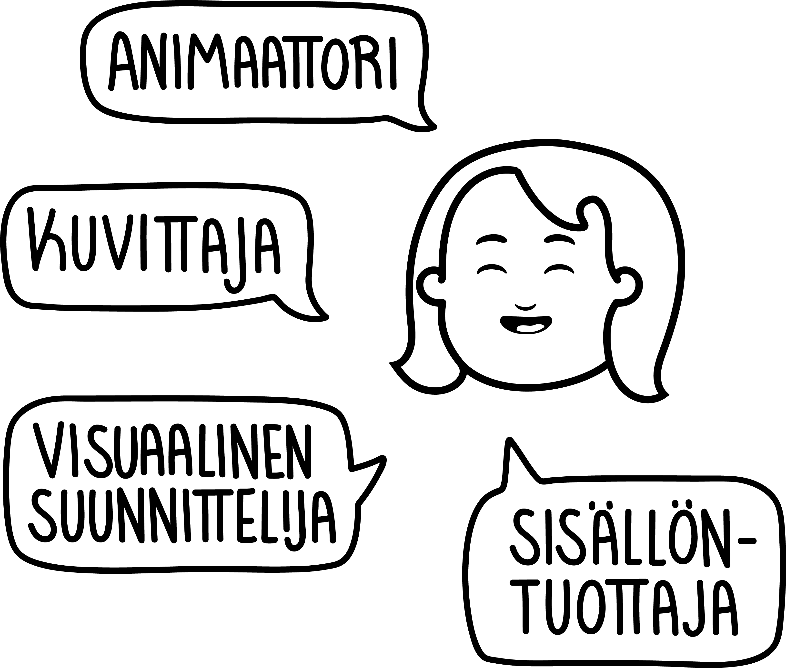

Terve! Olen visuaalinen tarinankertoja ja animaattori Oulusta. Rakastan luoda sympaattisen hupsuja hahmoja ja tuoda heidän persoonat eloon liikkeen avulla. Kuvitustyylini on kuitenkin monipuolinen ja luon asiakkaiden tarpeiden mukaan juuri heille sopivaa materiaalia. Tuotan somesisältöä niin tekstin, kuvan kuin videoiden muodossa.
KATSO SHOWREEL